轻松了解 HTTP 协议
为什么要学习网络协议呢？为什么要学习计算机网络呢？显然这很重要，至少能够帮助你找到工作的原因之一，学习网络知识点太多太多，没有那么快就能记住。
理解的网络协议，应该从背景原理去着手。那么从现在开始请认真阅读了哦！适合人群，对计算机有相应的了解，入门软件技术的朋友。
从客户端发送请求，会是神马结果？正常情况的状态码为 2xx，错误的状态码为 4xx，或是 5xx 等情况。
报错 404：
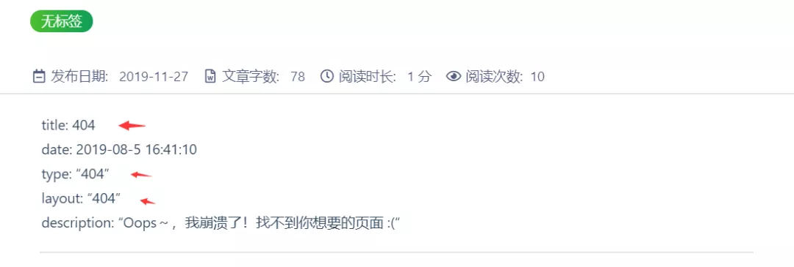
{kind=link}
{kind=link}
了解 Web，了解网络基础，了解 HTTP 协议，如何使用 HTTP 协议访问 Web，我们在电脑中的浏览器 Web 页面是如何查询的，网页浏览器中的地址栏中输入 url 地址，就可以显示页面，这也是我们了解的常识。
客户端、服务器
在浏览器中的地址栏内输入 URL，就可以看到 Web 页面，即是客户端在浏览器地址内输入 URL 之后，信息会被送到某处，然后从某处获得的回复，内容就会显示在 Web 页面上。
像这种通过发送请求获取服务器资源的 Web 浏览器等就叫做客户端。
我们所看到 Web 页面也不是凭空显示出来给我们看的，它是根据你在 Web 浏览器地址栏指定的 url 发送，Web浏览器从 Web 服务器获取文件资源等信息，然后在从服务器端返回在 Web 浏览器上显示出 Web 页面的。
抓住重点提炼：有两个主题，Web 浏览器作为客户端，一个为服务器，Web 浏览器通过指定的访问地址获取服务器上的资源，服务器使用 HTTP 协议的通信返回到 Web 浏览器。
Web 是建立在 HTTP 协议上通信的，HTTP 为超文本传输协议作为规范（或是严谨说法，超文本转移协议），完成从客户端到服务器端等一系列工作流程，协议是指规则的约定。
抓住重点提炼：什么是客户端与服务端呢？简单来说，客户端就是个人使用的电脑，而服务器就是服务器，通过电脑访问服务器上的资源，用的就是 HTTP 网络协议。
HTTP 协议
那么这里又问了什么是 HTTP 协议呢？
HTTP 叫做超文本传输协议，它是 TCP/IP 协议的一个应用层协议，用于定义 Web 浏览器与 Web 服务器之间的交换数据的过程，客户端连上 web 服务器后，若想获得 web 服务器中的某个 web 资源，需要遵循一定的通讯格式，HTTP 协议用于定义客户端和 web 服务器端通讯的格式。
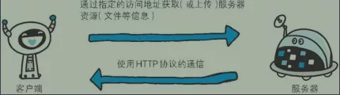
HTTP 的出现，在 1989 年，互联网是少数人的，为了致力于全世界的研究者们进行知识共享，诞生了 HTTP，有人提出了一种让远隔两地的研究者们共享知识的设想，借助多文档之间相互关联形成的超文本，连成可相互参阅的 WWW，万维网。
3 项www构建技术分别是：
{kind=link}
- SGML：Standard Generalized Markup Language
标准通用标记语言- HTML：HyperText Markup Language
超文本标记语言- HTTP：HyperText Transfer Protocol
超文本传输协议- URL：Uniform Resource Locator
统一资源定位符
- 把 SGML 作为页面的文本标记语言的 HTML
- 作为文档传递协议的 HTTP
- 指定文档所在地址的 URL
HTTP 是因特网的多媒体信使，每天有多少图片，页面，文件，电影，音频文件和其他资源都在因特网上面，HTTP 可以从遍布世界的 Web 服务器上将这些信息快速，可靠地移到人们的 Web 浏览器上。
Web 客户端和服务器，Web 内容存储在 Web 服务器上的，所使用的是 HTTP 协议，如果 HTTP 客户端发出请求，服务器会提供因特网中的数据，客户端向服务器发送 HTTP 请求，服务器会在 HTTP 响应中回送所请求的数据。
HTTP 客户端和 HTTP 服务器共同构成了万维网的基本组件。
Web 服务器是 Web 资源的存储库，Web 资源是 Web 内容的源头，Web 资源可以包含任意内容，所有一切内容都是 Web 资源提供的。
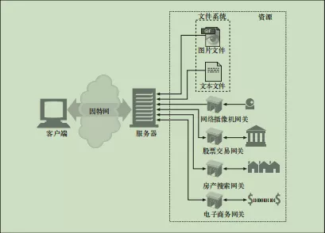
{kind=link}
URI 和 URL
每个 Web 服务器资源都是有一个名字的，因为这样客户端就可以选取它要的资源了，URI，服务器资源名，为统一资源标识符，URI 是名字一样，像因特网上的邮政地址，是世界范围内唯一的标识并定位信息资源。URI 分两种形式，为 URL 和 URN。
URL 为统一资源定位符，是资源标识符最常见的形式，描述了一台特定服务器上某资源的特定位置，URN 为统一资源名，为大范围使用，它是作为特定内容的唯一名称使用的，与资源所在地无关。
TCP/IP
计算机与网络设备要相互通信，双方就必须基于相同的方法，不同的硬件、操作系统之间的通信，所有的这一切都需要一种规则。而我们就把这种规则称为协议(protocol)。
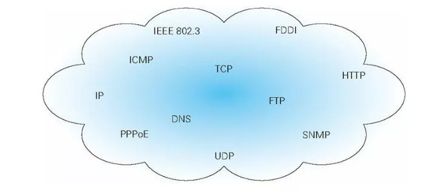
TCP/IP 是互联网相关各类协议族的总称。TCP/IP 是指 TCP 和 IP 这两种协议。TCP/IP 是在 IP 协议的通信过程中，使用到的协议族的统称。
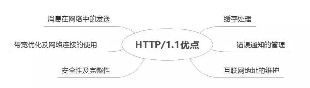
{kind=link}
{kind=link}
TCP/IP 的分层管理
TCP/IP 协议族按层次分别为 应用层，传输层，网络层，数据链路层，物理层。可以按照不同的模型分 4 层或者是 7 层。
将 TCP/IP 分为 5 层，越靠下越接近硬件。
- 应用层，应用程序收到传输层的数据后，接下来就是要进行解读，解读必须要先规定好格式，而应用层就是规定应用程序的数据格式，主要协议有 HTTP 等。
- 传输层，该层为两台主机上的应用程序提供端到端的通信，传输层有两个传输协议为 TCP（传输控制协议）和 UDP（用户数据报协议），TCP 是一个可靠的面向连接的协议，UDP 是不可靠或者说无连接的协议。
- 网络层，决定如何将数据从发送方到接收方，是建立主机到主机的通信。
- 数据链路层，控制网络层与物理层之间的通信，主要功能是保证物理线路上进行可靠的数据传递。
- 物理层，该层负责物理传输，与链路有关，也与传输的介质有关。
{kind=link}
TCP/IP 协议分层之后，如果后期要对哪些地方进行设计修改，无需全部替换，只需要对变化的层进行替换即可。
我们按照 4 层来说明，TCP/IP 协议族按层次分别分为以下：应用层，传输层，网络层，数据链路层。
- 应用层，应用层决定了向用户提供应用服务时通信的活动，如 FTP，文件传输协议和 DNS 服务，HTTP 协议处于应用层。
- 传输层，传输层对上层应用层，提供处于网络连接中的两台计算机之间的数据传输，有 TCP 传输控制协议和 UDP 用户数据报协议。
- 网络层，用来处理在网络上流动的数据包，规定哪条传输路线将数据包传送到对方计算机。
- 链路层，用来处理连接网络的硬件部分，包含操作系统，硬件的设备驱动，NIC 等。
以上内容过于概念，了解加理解：
那他们之间又是怎么通信的呢？
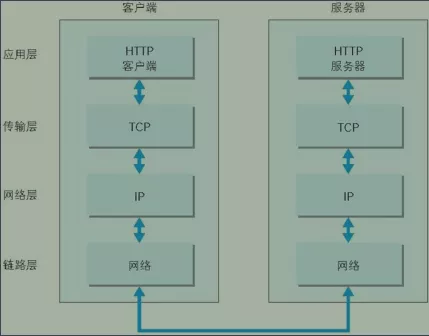
{kind=link}
{kind=link}
利用 TCP/IP 协议族进行网络通信时，会通过分层顺序与对方进行通信，发送端会从应用层往下走，即应用层（HTTP 客户端），传输层（TCP），网络层（IP），链路层（网络），而接收端则是从链路层往上走的。
发送端在层与层之间进行传输的时候，每经过一层必须被打上该层所属的首部信息，反之，接收端在接收数据时，每经过一层，就会把对应的首部去掉，这种把信息包装起来的做法叫做“封装”。
由图看文字内容，这个相信大家一定看懂的了。
传输层，TCP/UDP，传输控制协议和用户数据报协议，重点再说一次，TCP 是一种可靠的面向连接的协议，而 UDP 不是可靠的，或说是无连接的协议。
它们 TCP、UDP 都是传输层的协议，两个的区别是：
TCP 的可靠性是强的，它是可靠的，连接性，是面向连接的，报文，是面向字节流的，效率是，传输效率低，双工性，全双工，流量控制是滑动窗口，拥塞控制是慢开始，拥塞避免，快重传，快恢复的，传输速度是慢的，应用场景是对效率要求低，对准确性要求高或者要求有连接的场景。
UDP 的不是可靠的，无连接的，面向报文的，传输效率高的，一对一，一对多，多对一，多对多，流量控制，无，拥塞控制，无，但是传输速度是快的，应用场景是对效率要求高，对准确性要求低的。
TCP/IP 分层的好处
如果互联网只有一个协议通信，某个地方需要修改，那么就必须要整个全部换掉，但是分层之后，只是需要把变动的层替换就行了。
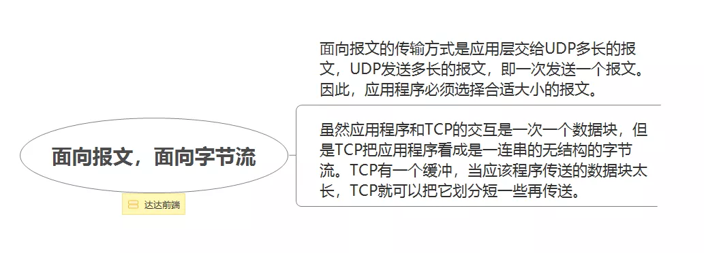
{kind=link}
TCP 的三次握手与四次挥手
请看图，记住有三个箭头，四个对话框，就可以记住口诀：
三次握手与四次挥手：
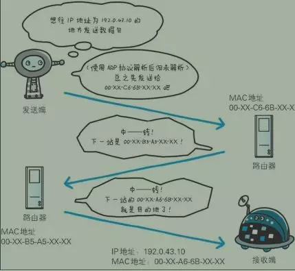
{kind=link}
三次握手
三次握手示意图：
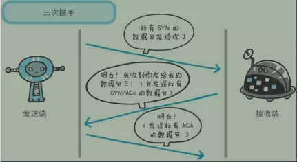
三次握手过程：
{kind=link}
- 第一次握手是在建立连接，客户端发送连接请求报文段，把标有 SYN 的数据包发给服务器端即为接收端。
- 第二次握手是服务器端即接收端收到客户端的SYN的报文段，同时发送标有 SYN/ACK 的数据包。
- 第三次握手是客户端收到服务器端的 SYN/ACK 的数据包后，向服务器端发送标有 ACK 的数据包。
上面的解释看图片一起理解会更好懂得，之间的传输数据。
TCP 的三次握手，那么你了解什么是 TCP 了吗？我相信有的人还记得，但是总会有人又忘记了，了解 TCP 头部报文，还有为什么是 TCP 的三次握手，而不是其他次数呢？在 TCP 三次握手过程中，有什么区别或者是说变化。
TCP，请记住中文名，传输控制协议，是一种面向连接的，可靠的，基于字节流的传输层通信协议，TCP 的头部报文，你了解吗？不了解即可百度。
[TCP/IP] TCP 的报文头
报文(message)是网络中交换与传输的数据单元，即站点一次性要发送的数据块。报文包含了将要发送的完整的数据信息，其长短很不一致，长度不限且可变。
让我们看看百度上面对“报文”的解释：
报文的理解及作用
报文就是在各个系统之间进行请求和响应时用来交换信息的，还需要遵守规定好的格式。
另外，应用报文多是多个系统之间需要通信的时候，比如银行的 ESB 系统到网关系统再到银联系统。在这中间报文就承担了装载数据，运输数据的功能，可能在这三个系统中报文的格式互不相同，但是承载的数据都是一样的。
TCP 头部报文：
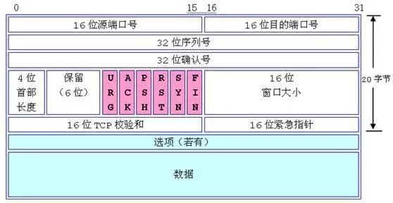
source port，源端口号，指向本地端口
destination port，目的端口号，指向远程端口
源端口号即是发送端的，接收端是目的端口号，源端口号从发送端依据某种规定发送到接收端的目的端口号，不同的应用程序都有者不同的端口，因为发送端会发送很多源端口号，对应接收端很多对应规则的目的端口号。
{kind=link}
Sequence Number，序列号
用于 TCP 通信过程中，分段序列进行字节流的传输，接收端会根据这个编号进行再排序确认。如排队每个人拿对应的号入口检查，进入后不会乱的就坐一样。
TCP有6种状态表示：
- SYN (建立联机)
- ACK (确认)
- PSH (传送)
- FIN (结束)
- RST (重置)
- URG (紧急)
分析 TCP 为啥三次握手
首先客户端，服务端，TCP 三次握手：
握手过程中使用了 TCP 的标志，SYN 和 ACK。
- 初始化状态
客户端处于 close 关闭状态，服务器处于 Listen 监听状态。 - 第一次握手
客户端发送请求报文将 SYN=1 同步序列号和初始化 seq=x 发送给服务端，服务端从初始化状态，创建连接，等待客户端，确认接收后的状态为 SYN_Receive。这个时候客户端处于等待状态为 SYN_Send。 - 第二次握手
服务器接收到报文后（SYN=1，seq=x）收到请求后请求报文变为同步序列号 SYN=1，初始化序列号 seq=y，确认号 ACK=1，ack=x+1，服务器为 SYN_Receive 状态，发送端的状态为：SYN_Send。 - 第三次握手
客户端收到服务端的数据包（收到响应后），然后发送同步序列号 ack=y+1 和数据包的序列号 seq=x+1 和 ACK=1 确认包作为应答（第三次握手：ACK=1, seq=x+1, ack=y+1），客户端和服务端变化为 established 状态。
发送三封信息给女朋友，这三次握手主要是为了验证我这边和女朋友那边的发送/收信能力是没有问题的，证明连接是通的，可以正式发送信息。
- 第一次握手，我发送信息，女朋友收到了，此时女朋友就知道，我发送信息的能力和她自己的收信能力是没问题的。
- 第二次握手，女朋友发送信息，我收到了，此时我明白，我的发送信息和接收信息是没有问题的，还是要进行第三次握手的，如果没有我的回音，女朋友还不知道自己的发送信息功能是否没有问题的。
- 第三次握手，我发送信息，女朋友收到了，此时女朋友也确认了，我们两者之间的发送和收信都是没有问题的。
负责域名解析的 DNS 服务
{kind=link}
DNS 服务和HTTP协议一样位于应用层。提供域名到 IP 地址之间的解析服务。DNS 协议提供通过域名查找 IP 地址，或逆向从 IP 地址反查域名的服务。
各种协议与 HTTP 协议的关系
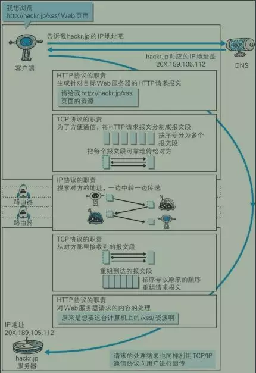
当客户端和服务端通过三次握手建立了 TCP 连接以后，当数据传送完毕，断开连接就需要进行 TCP 的四次挥手。
{kind=link}
四次挥手
四次挥手如下所示：
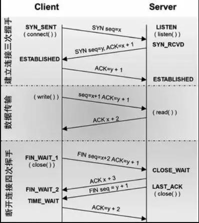
{kind=link}
- 第一次挥手
客户端设置 seq 和 ACK ,向服务器发送一个 FIN=1 报文段。此时，（第一次挥手，FIN=1，seq=u）客户端进入 FIN_WAIT 状态，表示客户端没有数据要发送给服务端了。 - 第二次挥手
服务端收到了客户端发送的 FIN 报文段，向客户端回了一个 ACK 报文段。 - 第三次挥手
服务端向客户端发送 FIN 报文段，请求关闭连接，同时服务端进入 LAST_ACK 状态。 - 第四次挥手
客户端收到服务端发送的 FIN 报文段后，向服务端发送 ACK 报文段,然后客户端进入 TIME_WAIT 状态。服务端收到客户端的 ACK 报文段以后，就关闭连接。此时，客户端等待 2MSL（指一个片段在网络中最大的存活时间）后依然没有收到回复，则说明服务端已经正常关闭，这样客户端就可以关闭连接了。
统一资源标识符
URI 是 Uniform Resource Identifier 的缩写，规定统一的格式可方便处理多种不同类型的资源，而不用根据上下文 环境来识别资源指定的访问方式。
URL（Uniform Resource Locator，统一资源定位符），URL 正是使用 Web 浏览器等 访问 Web 页面时需要输入的网页地址。
参考资料：《图解HTTP》